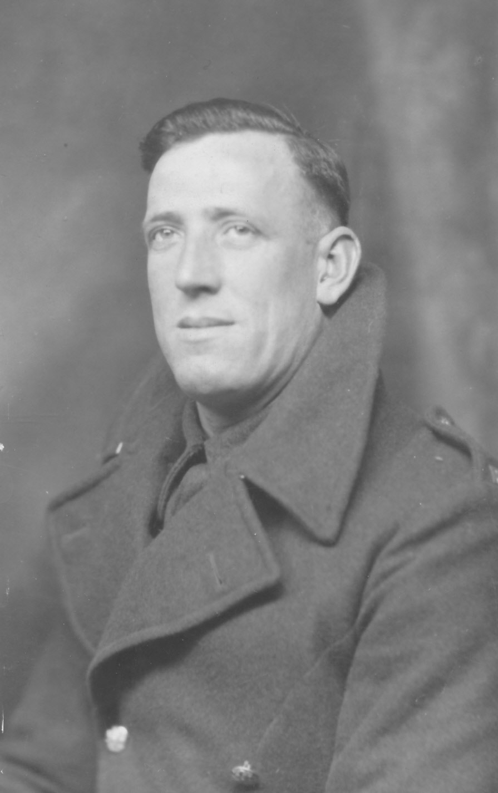

Albert Edward Jellico Page 1915 - c1998
[ Home ] | [ Calendar ] | [ Surnames Index ] | [ Errors ] | [ Family History ]A lorry driver and the child of William Sellis (a general labourer) and Ellen Wellard, Albert Page, the fourth cousin on the father's side of Nigel Horne, was born in Elham, Kent, England on 3 Nov 19151,2,3. He married Violet Scamp in Elham around Nov 19394. On 29 Sept 1939, he was living at 65 Marshall Street, Folkestone, Kent, England1 - less than a mile from his third cousin twice-removed on his father's side Jessie Hammond who was living at 71 Penfold Road in Folkestone and his father William Sellis who was living at 65 Marshall Street -.
He died c. Nov 1998 in Ashford, Kent, England3.
Parents
- William Ernest was born on 12 Mar 1881
- Ellen Fanny Maria was born on 2 Mar 1880
Citations
- 1939 Register - Findmypast (was the son of the head of the household)
- England & Wales births 1837-2006 - Findmypast
- England & Wales deaths 1837-2007 - Findmypast
- England & Wales Marriages 1837-2005 - Findmypast
Media
Albert Edward Jellico Page

Albert Edward Jellico Page - 2
1939 Register Transcription - TNA-R39-1721-1721B-021-44
England & Wales deaths 1837-2007 - BMD/D/1998/10/82706619
England & Wales births 1837-2006 - BMD/B/1915/4/AZ/001004/089
England & Wales marriages 1837-2005 - BMD/M/1939/4/PZ/000004/056
Family Tree

Map
Generated by ged2site. Last updated on Jul 3, 2024
Known Issues
Surname is different from both parents